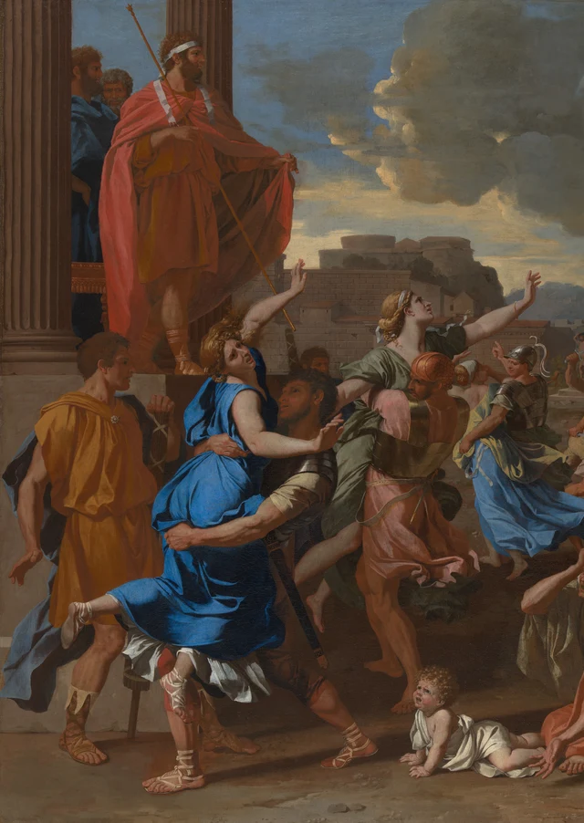
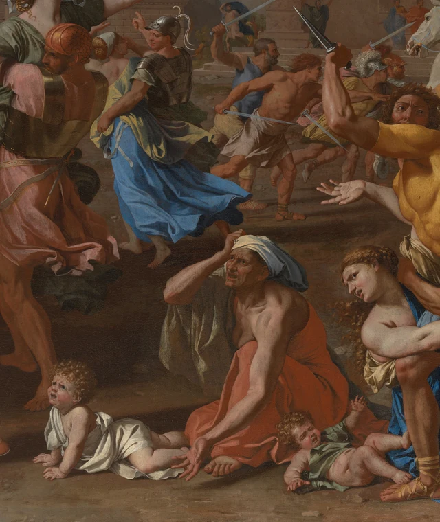

Der Mann links oben steht sicher. Zwei hohe Säulen fassen seine Gestalt ein. Von seiner Schulter fällt ein roter Mantel herab; mit einer Hand hebt er dessen Zipfel an. Unter seinen Füßen gerät dagegen alles aus dem Gleichgewicht. Eine Frau in Blau wird vom Boden gehoben, eine Frau in Grün streckt den Arm nach oben, Bewaffnete drängen in die Menge. Kleine Kinder liegen dicht neben den Füßen der Erwachsenen. Wenn unser Blick von der erhöhten Plattform hinunterwandert, wird ein Abstand schlagartig sichtbar: der zwischen einem Befehl und den Körpern, die seine Folgen tragen müssen.

Eine besondere Leistung dieses Gemäldes steht im Mittelpunkt der folgenden Betrachtung: Poussin unterscheidet die gleichzeitig ablaufenden Handlungen so genau, dass wir erkennen können, wie der Zwang verschiedene Menschen trifft. Architektur, Farben und Körperhaltungen ordnen das Getümmel zu einem überschaubaren Bild. Zugleich bleiben der Widerstand der Frauen, ihre abgewandten Köpfe, ihre von den Entführern wegstrebenden Hände und ihre haltlosen Füße in dieser Ordnung sichtbar. Wer die Anordnung würdigt, muss sich deshalb auch ansehen, was hier angeordnet wird.
Das Thema gehört zur römischen Gründungssage, nicht zu den durch verlässliche Augenzeugenberichte belegten Ereignissen. In der antiken Erzählung laden Romulus und seine Gefolgsleute die benachbarten Sabiner zu einem Fest ein. Dann rauben sie deren Frauen, um sie zu Ehefrauen zu machen. Das Anheben des Mantels ist das verabredete Zeichen. Poussin zeigt den Überfall selbst; die spätere Vermittlung der Sabinerinnen, die einen Kampf zwischen den beiden Völkern unterbrechen, ist eine andere Episode. Erläuterung des Met
Poussin malte das Bild in Rom. Sein erster Besitzer war Charles de Créquy, damals französischer Botschafter in der Stadt; später gelangte es in die Sammlung Kardinal Richelieus. Antiker Erzählstoff und eine an Skulpturen geschulte Figurensprache trafen hier auf ein gebildetes, gesellschaftlich hochgestelltes Publikum. Eine anders komponierte Fassung desselben Themas befindet sich im Louvre. Wir betrachten durchgehend das New Yorker Gemälde, erkennbar an der erhöhten Plattform links und dem Gebäude mit drei dunklen Fenstern und einem großen Torbogen rechts. Über die zeitliche Reihenfolge der beiden Fassungen wurde lange diskutiert. Hier gilt die heutige Datierung des Met: wohl 1633–1634. Wissenschaftlicher Katalog des Met; Fassung im Louvre
Für einen Befehl genügt eine kleine Bewegung
Romulus steht hoch und hat Platz. Die Männer hinter ihm verdecken seinen Umriss nicht. Neben ihm zieht sich eine Säule senkrecht nach unten; rechts öffnet sich der Himmel. Die große rote Mantelfläche lässt sich beinahe mit einem Blick erfassen. Schulter, Arm und angehobener Zipfel bleiben in einer weitgehend zusammenhängenden Form verbunden. Macht zeigt sich zunächst als räumliche Unbeengtheit: Der Befehlende braucht sich nicht in die verschlungenen Körper unter ihm hineinzubegeben.
Vergleichen wir seine Hand am Mantelrand mit der erhobenen Hand der blau gekleideten Frau darunter. Auf der Bildfläche liegen sie recht nahe beieinander, doch sie tun grundverschiedene Dinge. Die eine entfaltet ein Stück Stoff. Die andere strebt von einem festgehaltenen Oberkörper fort. Die Frau legt den Kopf zurück und dreht den Rumpf; ihre zweite Hand reicht seitlich an das Gesicht des Mannes heran, der sie trägt. Ihr Körper wird in eine Richtung bewegt, während Kopf und Hände eine andere vorgeben.

Der Träger der Frau in Blau hat die Beine weit auseinandergestellt und steht mit beiden Füßen auf dem Boden. Ein Arm liegt um ihre Taille, der andere unter ihren Beinen. Zusammen bilden sie ein tragendes Gerüst. Einer ihrer Füße ragt nach links, der andere hängt herab; die blauen Gewandfalten verbinden beide Richtungen. Die Gruppe lediglich als diagonale Komposition zu beschreiben, würde einen entscheidenden Unterschied unterschlagen. Der Mann verfügt über festen Halt. Der Frau ist der Boden unter den Füßen entzogen.
Daneben wird die Bewegung abgewandelt. Der Mann mit dem kupferfarbenen Helm wendet uns den Rücken zu. Sein Harnisch und das rosabraune Gewand bilden eine kompakte Masse. Über seiner Schulter erscheint das Gesicht der Frau in Grün, deren Hand nach rechts oben reicht. Die Gruppen berühren sich beinahe, behalten aber jeweils einen nachvollziehbaren Umriss. Das leuchtende Blau breitet sich weiter unten aus, das dunklere Grün steigt höher auf. Die Arme der Männer umschließen die jeweils ergriffenen Körper. Poussin wiederholt eine Handlung und verändert dabei Höhe, Richtung und Farbe. So wird der Raub als eine Folge einzelner Übergriffe lesbar und geht nicht in einer unbestimmten Unruhe auf.
Die erhobenen Handgelenke beider Frauen sind abgewinkelt. Ihre Finger bilden keine geschlossenen, gleichförmigen Fäuste. Tatsächlich haben diese Kurven etwas Leichtes; sie führen den Blick von der einen Gruppe zur nächsten. Ihr Zusammenhang bleibt dennoch eindeutig: Die Frauen verlieren die Verfügung darüber, wohin ihre Körper bewegt werden. Dass die Linien anmutig ineinandergreifen, ändert nichts an den Handlungen, zu denen sie gehören.
Rechts stoßen Kräfte aufeinander
Der rechte Vordergrund lässt sich weniger rasch entwirren. Mehrere Handlungen treffen hier an einer eng begrenzten Stelle zusammen. Ein Mann im gelben Harnisch hebt sein Schwert und dreht den Oberkörper zu uns. Ein graubärtiger Mann, um dessen Hüfte ein rosa Tuch liegt, kniet auf einem Knie und zeigt uns Seite und Rücken. Einen Arm streckt er gegen die Flanke des Bewaffneten aus, den anderen hebt er an. Neben ihnen kauert eine Frau in Blau. Sie greift in das rosa Tuch, während Kopf und Schultern nach links sinken. Wer auch diese Gruppe bloß als einen Mann beschreibt, der eine Frau fortträgt, übersieht die Abwehr und den Zusammenstoß in ihrer Mitte.

Beginnen wir beim rosa Tuch. Es knickt neben der greifenden Hand um, läuft über Hüfte und Rücken des Mannes und bildet breite Falten, die rechts unten zu seinem Knie hinabfallen. Der Stoff macht die Berührung der beiden Personen erkennbar und bindet die Gruppe an den unteren Bildrand. Gehen wir dagegen vom gelben Harnisch aus, führen Ellenbogen, erhobener Unterarm und Schwert nach links oben. Auf engem Raum widersetzen sich die beiden Bewegungszüge einander. Das Auge kann ihnen folgen, doch die Handlungen lassen sich nicht zu einer einzigen ungehinderten Bewegung verbinden.
Das unbedeckte Bein der Frau in Blau liegt dicht am unteren Rand. Ihr Gesicht ist zur Bildmitte gewandt; Brauen und geöffneter Mund lassen Angst erkennen. Ihr Haar fällt an dem geneigten Hals und der Schulter herab. Ausgestreckter Arm, gewölbter Rücken und auseinandergesetzte Beine der benachbarten Figuren engen ihren möglichen Rückzugsraum ein. Widerstand hat hier verschiedene Formen: ein unmittelbar abwehrender Arm, eine Hand, die Stoff festhält, ein tief zu Boden geduckter Körper. Die Bedeutung der Figuren lässt sich nicht allein an ihrer Muskelkraft ablesen.
Dahinter bildet die helle, gerundete Hinterhand eines weißen Pferdes eine größere Lichtfläche zwischen den kleineren Wendungen von Helmen, Armen und blauem Stoff. Das Pferd liegt in einer höheren Bildzone und trennt so das Ringen im Vordergrund von den Bewegungen weiter hinten. Noch weiter rechts weisen Hände und Gewänder über den Rand hinaus. Die Leinwand schneidet sie ab; der Vorgang scheint jenseits ihrer Grenze weiterzugehen.
Am Boden verändert sich der Rhythmus
Zwischen den großen seitlichen Gruppen öffnet sich unten ein niedriger Zwischenraum. Dort sitzt eine ältere Person mit einem hellen Tuch über dem Kopf. Eine Hand liegt am Kopf, die andere reicht zu den Füßen. Orangeroter Stoff sammelt sich um die angewinkelten Knie. Zu beiden Seiten befinden sich kleine Kinder: Eines stützt sich auf beide Hände, das andere liegt halb seitlich und hebt einen Arm. Ganz in ihrer Nähe setzen Erwachsene die Füße auf und spreizen die Beine.

Diese Gruppe verändert, wie wir Bewegung lesen. Die stehenden Figuren strecken Arme nach außen und nehmen weite Beinstellungen ein. Daraus ergeben sich Richtungen des Fliehens, Ergreifens oder Abwehrens. Bei der älteren Person führt die Hand zurück zum eigenen Kopf. Die Glieder der Kinder bleiben dicht am Boden; ihr Handlungsspielraum ist klein. Auch die Frau in Blau rechts neigt ihr Gesicht zu dieser niedrigen Zone hin. Das Bild unterwirft nicht alle Körper demselben weit ausgreifenden Takt. In der Mitte zeigt es eine Bestürzung, die auf das Geschehen weder mit Davonlaufen noch mit Kämpfen antworten kann.
Auch die Farbe scheint hier langsamer zu werden. Das Orangerot erinnert an den roten Mantel oben, sammelt sich aber nun an den Füßen, statt von einer erhöhten Plattform herabzufallen. Das weiße Kleid des Kindes bildet einen hellen Fleck auf der Erde. Verwandte Farben verbinden verschiedene Höhenlagen, während die Lage der Menschen eine andere ist. Rot bezeichnet keineswegs durchgehend eine bestimmte Tugend oder Zugehörigkeit. Die Farbe schafft eine Beziehung für das Auge; die Handlungen machen deren Unterschiede sichtbar.
Dunkle Bodenstücke und die deutlich verkleinerten Läufer dahinter erschließen die Tiefe. Die Vordergrundfiguren haben den Platz nicht vollständig abgeriegelt. Weiter hinten blitzen noch immer schmale Schwertklingen auf; manche Gesichter und Hände sind zu kleinen Farbflecken geworden. Die nahen Berührungen können wir einzeln prüfen. Die entfernten Figuren dehnen das Ereignis zu einer fortlaufenden Menschenbewegung aus, die sich nicht auf einen Blick auszählen lässt. Das Bild hält beides bereit: genau unterscheidbare Kontakte und die größere Reichweite des Geschehens.
Die Architektur macht das Getümmel lesbar
Das große Gebäude rechts wirkt ruhig. Drei dunkle Fenster folgen in nahezu regelmäßigen Abständen aufeinander. Senkrechte Gliederungen treffen auf die waagerechte Gesimslinie; der große Torbogen führt ins Dunkel. Unter graublauem Himmel und schweren Wolken bleiben die breiten braunen Mauerflächen zurückhaltender als Blau, Rot und Gelb im Vordergrund. Wir müssen diese Architektur nicht als genaue Rekonstruktion des frühen Rom verstehen, um ihre Funktion zu erkennen. Sie gibt den dicht gedrängten Körpern ein Bezugssystem, das sich nicht mit ihnen biegt.
Kreuzt ein Arm eine Waagerechte, tritt seine Schräge deutlicher hervor. Die dunklen Fenster bilden ein regelmäßiges Band über den unterschiedlich hoch angeordneten Köpfen darunter. Die Figuren vor dem Bogen erhalten einen Ort in der Tiefe. Architektur ist hier kein Lückenfüller hinter den Menschen. Sie entscheidet mit darüber, wie jede Körpergruppe lesbar wird.
Dazu trägt auch die Modellierung innerhalb der Farbflächen bei. Das Blau des Kleides wird am Knie hell und verdunkelt sich dort, wo ein Arm dagegen drückt. Auf dem Rücken einer rosa Falte liegt beinahe Weiß; in der Vertiefung wird derselbe Stoff dunkelrot. Licht und Schatten modellieren Brust und Bauch des gelben Harnischs. Wer Farben lediglich als flache Erkennungszeichen auffasst, übersieht, wie Griff und Druck die Form eines Gewandes verändern. Helle Flächen holen Körper nach vorn, schmale Schatten trennen aneinanderliegende Teile. Die Leinwand besitzt kein solches körperliches Volumen; dennoch erhalten die Handlungen durch diese Kontaktstellen eine nachvollziehbare Gestalt.
Das Gemälde ist gut zwei Meter breit. Auf dieser Fläche können sich mehrere Gruppen ausdehnen, und unser Blick kann zwischen großen Haltungen und einzelnen Fingern wechseln. Das Met erläutert, dass Poussin kleine Wachsfiguren und eine bühnenartige Vorrichtung zur Vorbereitung seiner Kompositionen verwendete. Der wissenschaftliche Katalog verbindet Figuren dieses Bildes außerdem mit antiken Skulpturen, mit einer Skulptur Giambolognas und mit einer Darstellung Pietro da Cortonas. Die Körpersprache ist ausgiebig studiert und greift auf ältere wie jüngere Kunst zurück. Kommentar und Katalog des Met Das erklärt die Klarheit der Posen, liefert aber kein automatisches Lob für jede Handlung, die sie vorführen.
Poussins Ordnung erlaubt uns, innezuhalten, zu vergleichen und zum bereits Gesehenen zurückzukehren. Gerade dabei werden die ungleichen Verhältnisse auf demselben Platz sichtbar. Der Befehlende steht erhöht; die zugreifenden Männer haben Halt; die geraubten Frauen verlieren den Boden; die Gegenwehr wird nach unten gedrängt. Die formale Ordnung bewahrt diese Unterschiede. Darin liegt die hier hervorgehobene Stärke des Gemäldes: Es hält solche Beziehungen einer längeren Betrachtung zugänglich. Für uns ergibt sich daraus eine Aufgabe. Die Bewunderung für die Anordnung darf den darin angeordneten Zwang nicht aus dem Blick verlieren.
Zum Weiterdenken: Zwei Arten der Zustimmung unterscheiden
In Die Schönheit der Philosophie untersucht Han Qin im Rahmen von SAE, Self-as-an-End, wie eine Unterscheidung aus einem verknäuelten Problem eine präzisere Frage machen kann und dabei selbst überprüfbar bleibt. Auf dieses Gemälde bezogen lässt sich vorläufig zwischen zwei Sätzen unterscheiden: „Ich erkenne die bildnerische Ordnung“ und „Ich billige die dargestellten Handlungen“. Das ist eine heutige Betrachtungsübung; über Poussins Absichten gibt sie keine Auskunft. SAE-Grundlagentext; Die Schönheit der Philosophie
Wählen Sie eine der linken Gruppen und schreiben Sie zunächst einen Satz über die Form: Das blaue Kleid breitet sich vor dem dunklen Rumpf des Mannes aus. Ergänzen Sie dann für dieselbe Stelle ein genaues Tätigkeitswort: Sein Arm umfasst ihre Taille; ihre andere Hand strebt von ihm fort. Lesen Sie beide Sätze zusammen. Hat die Bewunderung im ersten unbemerkt ausgelassen, was im zweiten geschieht? Prüfen Sie anschließend den rechten Vordergrund. Wenn alle männlichen Arme mit „Zugreifen“ beschrieben werden, zwingt uns dann der gegen den gelben Harnisch gerichtete Arm, die Beschreibung zu ändern? Die Unterscheidung bewährt sich daran, ob wir genauer sehen.
Damit ist die Frage nicht erledigt. Gerade weil Griff, Verlust des Halts und gegenläufige Gesten so klar angeordnet sind, können wir die Gewalt erkennen. Bildform und dargestelltes Handeln lassen sich innerhalb des Gemäldes also nicht vollständig voneinander lösen. Daraus entsteht eine genauere Frage: Wo hilft uns die Ordnung, den Zwang wahrzunehmen, und wo könnte sie dazu verführen, nur noch die Posen zu bewundern? Eine Antwort verlangt die erneute Prüfung einzelner Bildstellen. Weder der Rang des Werkes im Kanon noch ein moralisches Etikett kann uns dieses Hinsehen abnehmen.
Bildnachweise und Quellen
Die Beobachtungen beruhen auf der offiziellen Bilddatei des Met mit 4000 × 2973 Pixeln. Die Gesamtansicht ist die unveränderte heruntergeladene Datei einschließlich des schmalen Leinwandrandes und der äußeren schwarzen Umrahmung. Die drei Detailansichten wurden ausschließlich beschnitten. Pixelwerte und ICC-Farbprofil sind erhalten; es erfolgten keine Farbkorrektur, Schärfung, Restaurierung oder Ergänzung. Die Bedingungen einer Bildschirmansicht unterscheiden sich weiterhin von der Betrachtung des Originals.
Das Bild steht gemäß der Open-Access-Richtlinie des Met unter CC0 zur Verfügung. Diese Freigabe gilt nicht automatisch für wissenschaftliche Texte des Museums. Werkdaten, die Unterscheidung der Fassungen und theoretische Bezüge sind durch die Links im Text sowie das Quellenverzeichnis nachgewiesen. Technische Angaben enthält der Bildnachweis. Die Deutungen werden in diesem Beitrag zur Diskussion gestellt; eine Bestätigung durch das Museum ist damit nicht verbunden.